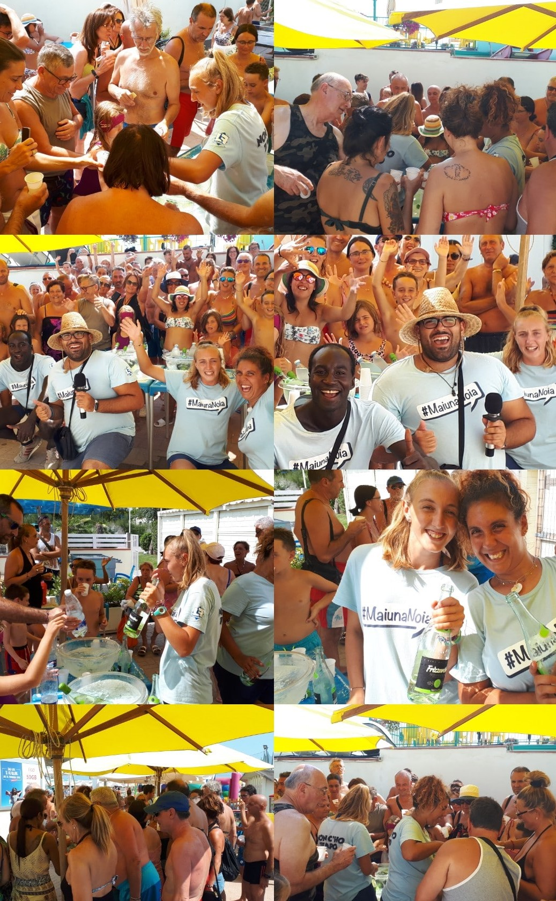
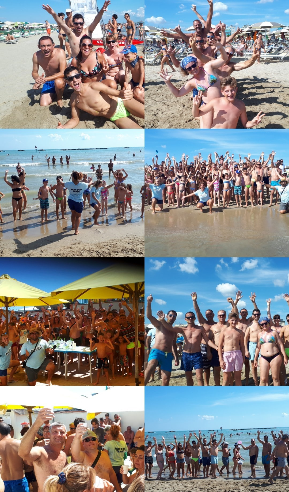
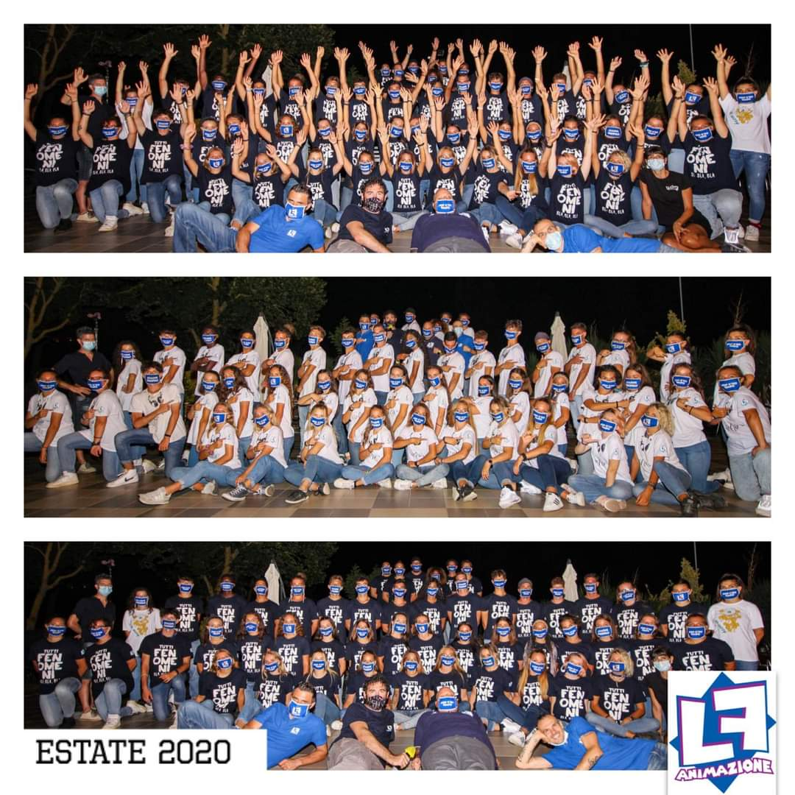

Nonostante io sia una persona molto socievole ed amichevole, mi piace passare del tempo per me, per decicarmi alle mie passioni.
Una delle mie passioni più grandi, e che per molti anni è stato anche il mio lavoro, è sicuramente l'animazione turistica.
Ho iniziato nel 2013 e la mia ultima stagione è stata l'anno scorso, estate 2020.
I momenti singolari, le soddisfazioni, le liti, le sudate e le nottate insonne che ho vissuto in tanti anni di animazione
rimaranno sempre con me.

Un'altra delle mie passioni, è sicuramente il cinema. Una delle pellicole che più mi ha influito è "Quarto Potere", forse
perchè sono continuamente alla ricerca della mia "Rosabella".
Tra i registi che più mi hanno influenzato ci sono Kubrick, Tarantino, Scorsere, Fincher e Polanski.
Un'altra mia passione, è sicuramente la lettura. Cerco sempre di dedicare almeno un'oretta al giorno alla lettura di un
buon romanzo, o di qualche racconto breve.
I miei scrittori preferiti sono Bukowski, King, Christie, Saviano e Welsh.
Infine, una'altra mia grnde passione che spesso è una vera e propria malattia è SSC Napoli.
L'amore per questa squadra spesso muta in ignoranza, lo ammetto, ma con essa ho vissuto emozioni uniche,
di dolore e gioia, che poche cose al mondo mi hanno fatto provare.
